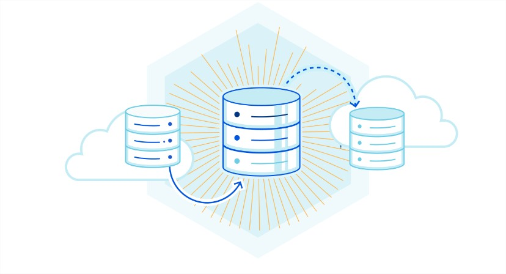
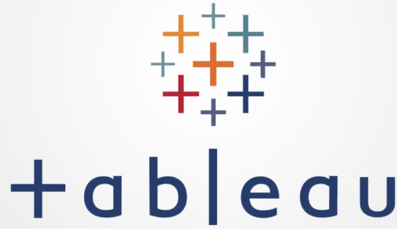

In this project we created a database with the whole data set of the European scale-up leader in eSignature.
After Creating the database we made some data cleaning, data quality checks and data analysis with SQL.
We then built data visualizations from our analysis and made a full presentation of our findings to business users.


In this project we created a SQL function, with all the data from diverses tables that we need in order to analyze monthly performances for COMEX.
This function is connceted to Tableau Server where we could build our analysis dashboards as well as update them with fresh data

This includes monthly performance reporting that I've been in charge to present to the COMEX of a FinTech company. POC and Business Analysis for prospects. etc..
In this project we extract data from Fintech company database to analyze it in order to analyze the impact of PSD2 regulations.
After that we built data visualizations in order to present live our findings to COO and then share it to all concerned teams.

In this project we built a simple testing framework to touch on AB Testing on a item-level granularity.